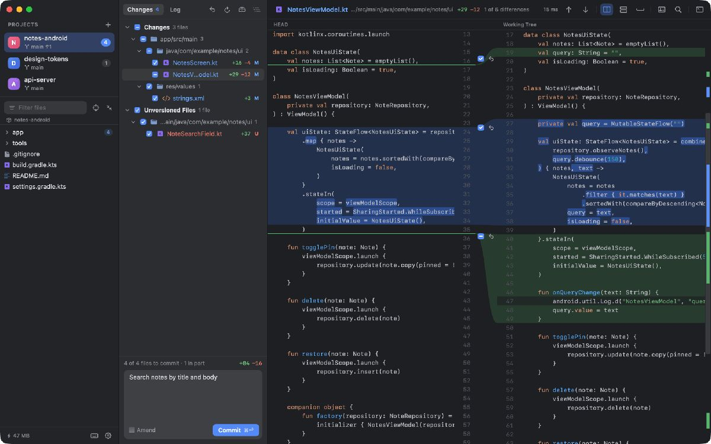
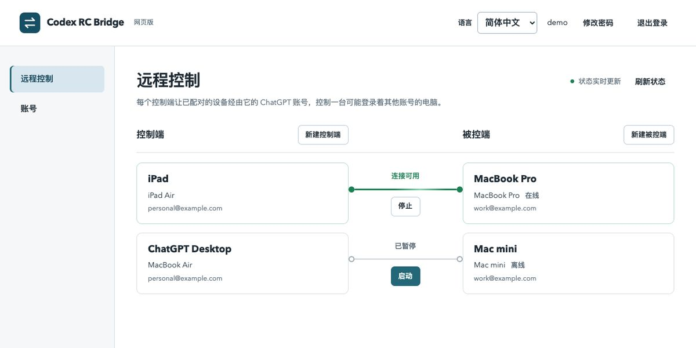
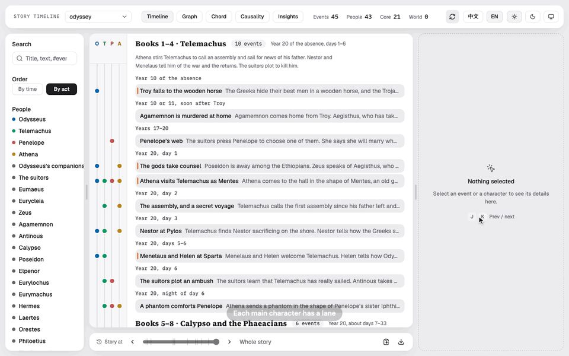
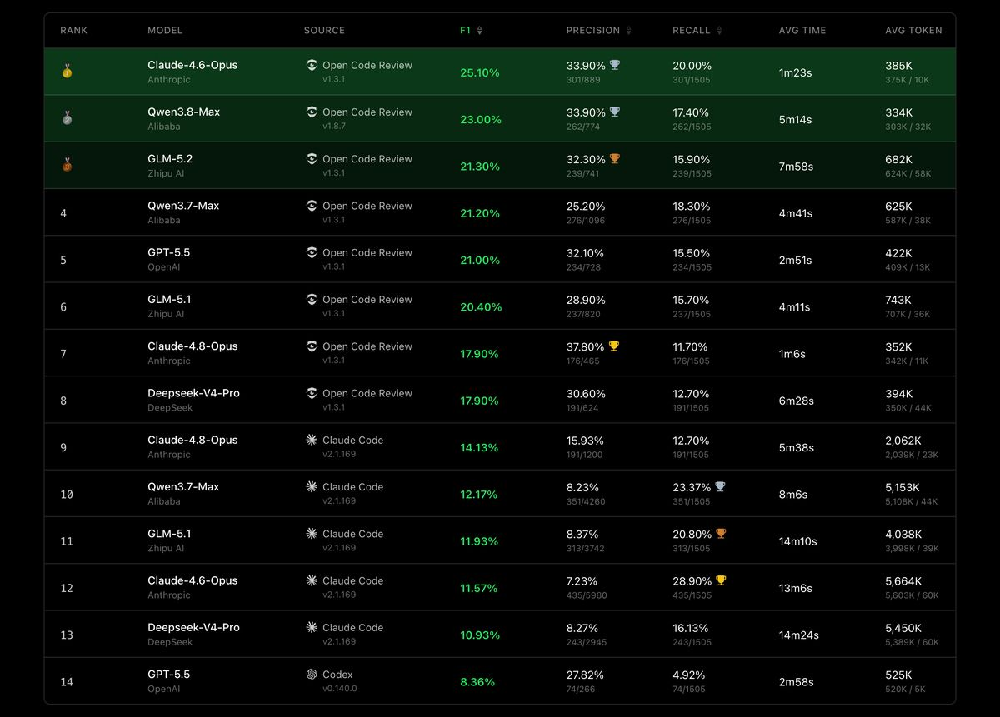
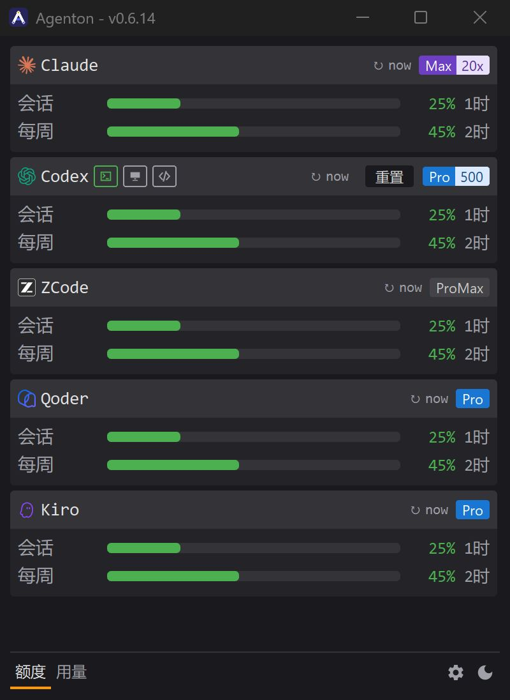

AI 日报
面向 AI 初学者的每日资讯：要闻、工具、项目与需求动态。
最新一期
AI 日报 · 2026-11-16（周一）
时间窗口：11-15 08:00 到 11-16 08:10（台北时间）。周末到周一官方渠道更新较少，本期为短版；已与前 7 期去重，每条均核对正文与日期。
今日看点
- 非程序员 4 天做出混合现实钢琴教学应用： 发帖人自述不写代码，借助 Claude 让 2007 年的数码钢琴在头显里显示下落音符。
- AI 辅助开发的收款系统中，测试没有发现的 4 个问题： 涉及 webhook 重试、状态更新与免费额度。
- 企业 AI 使用成本的讨论： V2EX 发帖人转述，公司大模型支出已占部门往年工资总额的 20%。
今日要闻
一家公司接入 AI 的年度成本。
原文正文要点
V2EX 发帖人称，公司今年 2 月开始大规模采购 Claude API，员工按月限额使用，目前大模型支出已占部门往年总工资的 20%，估计全年会超过 30%，并担心明年削减额度和裁员。内容为发帖人转述的聊天信息，帖子有 37 条回复。V2EX（11-15 10:54）
工具与更新
DiffCode：查看代码改动的 Mac 原生工具

Codex RC Bridge：跨 ChatGPT 账号远程控制 Codex

Story Timeline：为 AI 续写小说保存设定和时间线

热门项目与玩法
KeySight：4 天做出的混合现实钢琴教学应用
原文正文要点
发帖人自述没有写一行代码，借助 Claude 让 Steam Frame 头显里的音符落在 2007 年的真实钢琴键上。过程中 Claude 先用 15 分钟验证钢琴能否连上头显这一最大风险；没有直接照搬其他开源项目的代码，而是借鉴思路并注明出处；后来新增的「钢琴是否断开」检查在头显上误判，导致每 3 秒断开一次。发帖人的结论是：电脑上测试通过不等于真机可用。r/vibecoding｜GitHub（11-15 16:43）
AI 辅助开发的收款系统里，测试没有发现的 4 个问题
原文正文要点
发帖人的应用服务几家真实商户。例如：webhook 先记录「已处理」再更新付款，更新失败后重试被当作重复，顾客已付款但订单未变；状态更新没有限定原状态，已取消的发票被改成已付并发出感谢消息；一次失败的查询被当作「缓存过期」，每 15 分钟重建，最终超出 Supabase 流量额度被停用 API。发帖人认为 AI 写对了正常路径，出错路径仍需要人工检查。r/vibecoding（11-15 21:18）
Brabble：黑客松信息聚合站
原文正文要点
作者用 Claude Design 设计、Antigravity 和 Claude Code 开发，汇总 Unstop、Devpost、Devfolio 等平台的比赛并按截止日期排序，免费、无需注册；作者称已有 5000 多人注册。r/vibecoding｜网站（11-16 01:00）
V2EX 讨论 DeepSeek Harness 的编程能力
原文正文要点
发帖人称因 Codex 效果下降、Claude Code 要求身份验证，改用 DeepSeek Harness 半个月，从 UI 还原到登录服务器部署、查日志修复都已完成，并已停用 Claude Code。内容为个人体验，帖子有 78 条回复，观点存在争议。V2EX（11-15 16:22）
GitHub Trending 今日榜

原文正文要点
以下是本期项目及单日新增星数。
- open-code-review（+691）：源自阿里内部的 AI 代码审查命令行工具，配置模型接口即可使用。
- LoopForge（+423）：自托管工作区，在对话中把任务分派给 CodeBuddy、Codex、Claude Code，自动开沙箱、提交 PR，关键步骤需要人工批准。
需求与合作动态
文旅企业 AI 服务总方案的售前策划
原文正文要点
远程项目，为一家文旅飞行服务企业撰写 AI 服务总方案（AI 大脑、业务架构、分期路线、裂变方案）。无预付款，客户签约且首期款到账后按到账金额 3% 结算，未签约无报酬；不能直接对接甲方，初选后签署保密协议。应征需提交应征表、1–3 页草稿方案和个人案例，截止 11-19 18:00。电鸭（11-15 16:46）
今日推荐方向
非程序员如何和 AI 合作完成一个硬件相关应用

- 切入角度
- 按天梳理 KeySight 的开发过程，重点了解「先验证最难的一步」和「在真实设备上测试」两条经验。
- 参考素材
- 适合读者
- 想用 AI 做出第一个实用小项目的初学者。
AI 写的代码能运行，不代表出错时也正确
- 切入角度
- 选取付款 webhook 和状态更新两个例子，了解为什么要让 AI 列出每一步失败时会发生什么。
- 参考素材
- 适合读者
- 准备把 AI 做的应用用于真实业务的初学者。
个人和小团队如何控制 AI 使用成本

- 切入角度
- 从企业大模型支出占工资比例的讨论出发，了解按月限额和用量统计等做法，注意原帖为转述信息。
- 参考素材
- 适合读者
- 已经在付费使用 AI 工具、关心开销的读者。
未能核验的来源 展开查看
无新内容
Claude Code 最新版本 v2.1.325 发布于 11-14；Codex 仅有 0.171.0 预发布版本；Cursor Changelog 最新一条为 11-06；Anthropic News 最新为 11-09；Google AI Blog、量子位、Ben's Bites 窗口内无新内容；AIbase 最新停在 11-14，AI工具集快讯停在 11-13。
打不开或被限流
r/ClaudeAI 返回 429。
往期日报
- AI 日报 · 2026-11-15（周日）
- DeepSeek 开放全家桶应用 API： 联网搜索、文件、语音识别与合成等能力均可单独调用、分别计费。
- 一张图拆成可编辑图层： 社区出现能把平面图拆成透明图层并导出 PSD 的在线工具。
- AI 日报 · 2026-11-14（周六）
- ChatGPT Wallet 发布： Agent 可以代用户付款，每笔都需要用户确认，商家看不到真实卡号。
- HTML 幻灯片转可编辑 PPTX： 开源社区出现浏览器本地运行的转换工具，可以先微调再导出。
- AI 日报 · 2026-11-13（周五）
- Gemini 4 Hydrogen 发布： 覆盖 Gemini App、Google 搜索、AI Studio 与 Gemini API 全部档位，Google 搜索同步全面升级。
- 豆包工作开放第三方模型： 可选 Kimi、GLM、DeepSeek 等模型，并标注额度消耗倍率。
- AI 日报 · 2026-11-12（周四）
- AI 内容误判案： 北京互联网法院认定，平台将用户原创误判为「AI 生成未标识」并作处理，构成违约。
- Qwen4-Max 预览版上线： 已接入千问办公、Qoder 等官方产品，正式版参数与发布时间尚未公布。
- AI 日报 · 2026-11-11（周三）
- Claude 新增表格与白板： Claude Sheets、Claude Whiteboards 进入 beta，Claude Dashboards 正式可用并更名为 Claude Data，所有付费方案可用。
- OpenAI 与 Upwork 的自由职业研究： AI 相关项目的时薪与其他项目相近，但固定价预算更高、工时更多。
- AI 日报 · 2026-11-10（周二）
- Claude Fable 5.2 与 Mythos 5.2 发布： 官方称输出比 5.1 快最多 30%，价格降至每百万 token 输入 $8、输出 $40；官方仍建议日常任务先用 Opus 5.5。
- 办公 Agent 进入工作群： 千问办公 2.0 可跨多个钉钉群汇总信息，并按规则自动处理被 @ 的任务。
- AI 日报 · 2026-11-09（周一）
- Claude Code「不再询问」可能把密钥写进项目文件： 被永久批准的命令会原样保存在 .claude/settings.local.json，Apiiro 在 GitHub 公开仓库中发现 1,122 份含密钥的此类文件；帖子给出了一条命令的自查方法。
- 非开发者用 AI 做实用系统： 一位汉堡店店主用 Claude Code 搭建全店运营系统，员工每天使用；另有家长为生病在家的孩子做了 100 多个摄像头体感小游戏。
- AI 日报 · 2026-11-08（周日）
- AGENTS.md 被用于攻击编程 Agent： 网页可将指令文件静默写入下载目录，在该目录启动 Codex 或 Claude Code 后，Agent 可能照文件内容修改配置、绕过沙箱；报道附有自查步骤。
- 外包合作动态： 电鸭出现 WordPress 官网加门店 POS 收银库存系统的外包需求，总预算 5000 元起，按三期付款。
- AI 日报 · 2026-11-07（周六）
- Cursor 支持与 Agent 实时语音通话： 可在 IDE、网页与 iOS 上口述需求并听取进度，底层使用 Grok Voice；隐私模式开启时语音数据零留存。
- 短剧与办公文本处理： 即梦短剧工作室把剧本到预演串成一条流程；另有实践把 200 条客户留言用大模型约 78 秒完成分类。
- AI 日报 · 2026-11-06（周五）
- Cursor 可以直接构建并上线应用： 描述需求后，云端 Agent 搭建网页、数据库、登录与托管，生成可分享的链接。
- AI 与安全： OpenAI 发布 GPT‑6 Cyber，称为 Linux 内核 948 个漏洞写出提权利用；Claude Code 用户反馈邮箱出现在 User-Agent 请求头中。
- AI 日报 · 2026-10-26（周一）
- 编程订阅该买哪家又吵起来了： V2EX 热帖对比 Codex 和 Claude，评论一边倒说 Opus 5.5 期 Codex「又慢又笨」，但很多人双持是因为 Claude 易封号、额度折腾。
- Personal Agent 正在从「科幻」变成日常： 卡兹克花 5 天做出可视化 Agent 流水线；有人用 ESP32 加网页让 AI 自动操作 iPhone 点外卖；宝玉说天天用 Coding Agent 的人波澜不大，第一次体验的人容易沉迷。
- 大厂降价和「科技圈外零回报」同时出现： Max Woolf 梳理 OpenAI/Anthropic 近几个月最高降价约 80%；Apollo 则称科技业以外几乎看不到 AI 带来的财务回报——可对照理解 AI 的使用成本与财务回报。
- AI 日报 · 2026-10-25（周日）
- Claude Code 的"代言人"Thariq 离开 Anthropic： 他本人发帖确认，2.7 万赞、400 多万浏览，是今天 AI 编程圈最大的话题。
- Kimi K3.1 的真实口碑出来了： V2EX 热帖说"额度 10 分钟就烧光"，评论集中吐槽额度不透明、套餐不划算。提供了评估国产模型套餐的用户视角。
- Personal Agent 到底能干啥： V2EX 有 30 多条回复的真实用法（机票降价提醒、记账、每日资讯日报），即刻上也有人算了"县城大妈的时间不值 token 钱"这笔账。可供初学者评估 AI 助理的用途。
- AI 日报 · 2026-10-24（周六）
- Cursor 能直接操控你的电脑了： Agent 可以自己打开桌面软件（比如 iOS 模拟器）去测试它写的功能。官方推文 4558 赞，可用于了解 VibeCoding 的桌面测试能力。
- 国产模型 Kimi K3.1 Pro 发布： 官方称跑分接近 Claude Opus 5.5，价格只有它一半，11 月 4 日前开放完整权重。网页、App、Kimi Work、Kimi Code 当天都能用，面向国内使用者。
- AI 服务与市场信号： 有人用 Opus 5.5 在 36 小时里把 45 个客户的 WordPress 网站改成静态站；还有学生靠卖 VibeCoding 课赚到第一笔 30 美元。涉及小商家的网站改造与工具需求。
- AI 日报 · 2026-10-23（周五）
- Claude 的「自动模式」： 从下周起，Pro、Max、Team 用户在 Claude 网页、桌面和手机端默认不再一步步点"批准"，由自动检查拦截危险操作。官方推文 9885 赞。这一变化涉及使用体验与操作安全。
- Agent Skills 捐给 Linux 基金会旗下的 AAIF，跟 MCP 放在一起。 Skills 正式成了跨 ChatGPT、Cursor、Copilot 通用的标准，可帮助初学者理解 Skills 的用途。
- AI 应用案例： 一个非程序员用 Claude Code 给披萨店做了自有点餐 App，帮店主省掉外卖平台 25–30% 的抽成，已经有第一个付费客户。
- AI 日报 · 2026-10-22（周四）
- 今日关注：Anthropic 发布 Claude Duet，一个会主动来找你的 AI 助理。 两个多月里已经有四家公司推出同类产品，可关注 AI 助理代办任务的能力。
- VibeCoding 圈今天的主题是安全。 Railway 的密钥系统被入侵，LiteLLM 安装包被投毒，PHP 曝出漏洞。使用 AI 做项目的读者可关注 API Key 风险。
- 生活应用：用 Claude Code 或 Codex 一键清掉电视广告。 相关开源项目 5 天涨到 2 万星。